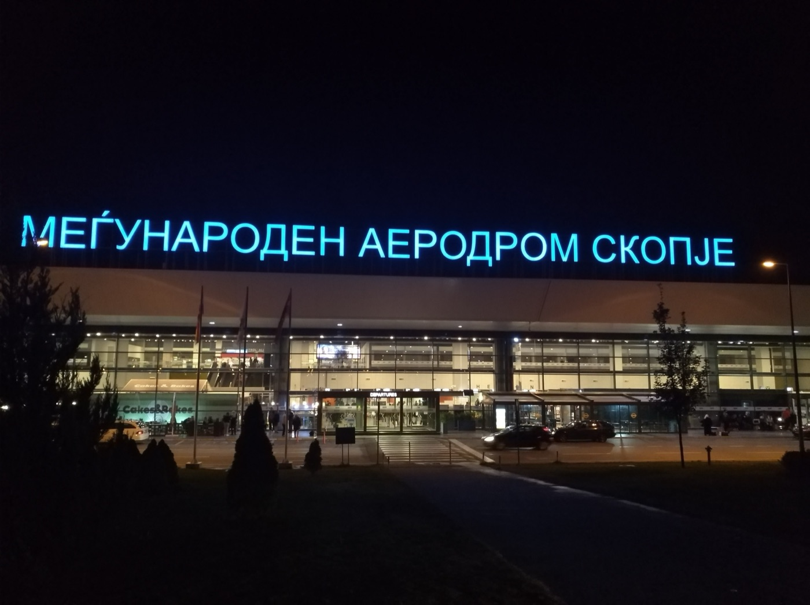

Parte 5
Guida pratica
Dall'aereo alla piazza, i denari, i taxi che esistono davvero e cosa fare se qualcosa va storto.
Guida praticaParte 5
87
Arrivo e partenza
Venerdì sera: dall'aeroporto alla piazza
Si atterra alle 19:45. L'aeroporto è 21 km fuori città: in centro si arriva in venticinque minuti, ma solo se il mezzo è già prenotato.
Lo scalo è piccolo e di sera si svuota in fretta. Con il solo bagaglio a mano si esce in quindici-venti minuti. Fuori ci sono i taxi ufficiali e un bancone dei cambi: conviene cambiare lì il minimo per la prima sera e fare il resto in centro, dove il tasso è migliore.
1
Van privato, 8 posti consigliato
25 minuti · € 35-50 a tratta per tutto il gruppo · da prenotare prima
È l'unica soluzione che mette sei persone e sei bagagli su un mezzo solo, con l'autista che aspetta in arrivi con il cartello. Prenotato in anticipo costa meno di due taxi e non lascia margini di trattativa in piazzale.
2
Due taxi ufficiali
25 minuti · 1.500 MKD (~€ 25) per auto, tariffa fissa · ~€ 50 in due
In aeroporto possono caricare solo i taxi autorizzati: bianchi, con il numero da 1 a 65 sul tetto. La tariffa per il centro è fissa e dichiarata. Chi vi abborda in sala arrivi di solito chiede il doppio.
3
Vardar Express, la navetta
30-40 minuti · 199 MKD (€ 3,30) a testa · ~€ 20 in sei
Ferma davanti all'Holiday Inn, a due passi dalla piazza. È la soluzione più economica, ma passa ogni due o tre ore: alle 19:45 di un venerdì può voler dire aspettare un'ora e mezza al freddo. Per il ritorno, di giorno, è un'altra storia.
Il trucco
Prenotate il van entro fine novembre e chiedete conferma per iscritto dell'orario del volo. Se il volo ritarda, l'autista controlla il numero: dategli il codice Wizz, non solo l'orario previsto.
Guida praticaParte 5
88
Arrivo e partenza
Lunedì: l'ultima mezza giornata
Il volo riparte alle 16:50. Contando due ore e mezza di margine, si lascia il centro verso le 13:45: all'aeroporto per le 14:15. Non è esagerato, con sei persone e un volo internazionale.
Il check-out è di solito entro le 11: le valigie si lasciano alla reception e si recupera tutto all'ora di pranzo. Restano quindi quattro ore buone in città, abbastanza per la spesa nel bazar e un ultimo pasto.
Check-in online Wizz
Si apre 30 giorni prima ed è gratis fino a 48 ore dalla partenza. Dopo, e in aeroporto, si paga. Quello del ritorno si apre il 5 dicembre alle 16:50, cioè mentre siamo già là: fatelo dal telefono quella sera.
Cosa non può salire in cabina
Ajvar, miele, formaggio fresco, rakija e vino sono liquidi o creme: in bagaglio a mano non passano. Se nessuno ha una stiva, la spesa si limita a cose secche — peperoni essiccati, tè di montagna, spezie, rame.
Guida praticaParte 5
89
Muoversi
In città si va a piedi
Il centro di Skopje è piccolo: dalla piazza al Vecchio Bazar sono otto minuti, alla fortezza dieci. Per tre giorni, i mezzi servono due volte sole: per il Vodno e per Matka.
- Autobus urbani
- Gestiti da JSP, i famosi rossi a due piani. Circa 40 MKD a corsa. Linea 25 per Sredno Vodno, dove parte la funivia; linea 60 per Matka (60 MKD).
- Taxi
- Scatto 50 MKD più 32 MKD al chilometro: una corsa dentro il centro sta su 100-150 MKD, cioè due euro. Con il tassametro acceso.
- Funivia del Vodno
- Da novembre a marzo 10:00-17:00, ultima salita 16:45, chiusa il lunedì. 100 MKD a testa.
- Ultimo bus da Matka
- Parte alle 19:30, ma con il buio alle 16 non vi servirà.
Uber e Bolt non ci sono
Nessuno dei due opera in Macedonia del Nord: sul sito ufficiale di Bolt il Paese non compare e la pagina di Skopje non esiste. Molte guide online dicono il contrario: sbagliano. Le app vere sono Global Taxi Skopje e Nase Taxi, oppure si fa chiamare un taxi dalla reception.
Guida praticaParte 5
90
Soldi
Denari, carte e mance
La moneta è il denaro macedone, in cirillico ден. Il cambio è agganciato all'euro e si muove pochissimo: 61,5 denari per un euro, cioè 100 denari poco più di un euro e sessanta.
Il modo più semplice per farsi il conto in testa: si divide per sessanta. Un caffè a 60 denari è un euro, un pasto da 600 è dieci.
- Dove cambiare
- Negli uffici di cambio del centro, le menuvačnica: non prendono commissioni e danno tassi migliori dell'aeroporto. Sono tante e si fanno concorrenza.
- Carte
- Accettate in quasi tutti i ristoranti e negozi del centro. Nel Vecchio Bazar servono contanti: botteghe, kebapi, caffè turco.
- Bancomat
- Ce ne sono molti in centro. Attenzione alla commissione di prelievo della vostra banca: meglio pochi prelievi grossi.
- Mance
- Si arrotonda, non si calcola una percentuale. Al ristorante lasciare il resto o il 10% su un conto importante è più che sufficiente.
Quanto costa, in pratica
Skopje è una delle capitali più economiche d'Europa. Un caffè 60-80 MKD, una birra Skopsko 120-150, dieci ќebapi con pane 250-350, un pasto completo in trattoria 500-700, una corsa in taxi in centro 150. In sei, con tre pasti al giorno, si sta sotto i 100 € al giorno per tutto il gruppo.
Guida praticaParte 5
91
Telefono e corrente
Internet non è come in Europa
Questo è il punto su cui più persone si fanno male: la Macedonia del Nord non è nell'area del roaming europeo. Il "roam like at home" non si applica, e senza controllare si rischia una bolletta seria.
L'Unione europea ha aperto i negoziati con i Balcani occidentali il 6 novembre 2026 proprio per estendere il roaming gratuito, ma l'accordo arriverà a trattativa conclusa: non in tempo per dicembre. Qualche operatore applica già tariffe ridotte per scelta propria, ma bisogna verificarlo sul proprio piano, non darlo per scontato.
- Prima di partire
- Ognuno controlli il costo di dati e chiamate in Macedonia del Nord sul sito del proprio operatore. In alternativa, una eSIM locale comprata prima della partenza.
- Wi-Fi
- Gratuito e diffuso in alberghi, bar e ristoranti del centro: per tre giorni può bastare, tenendo i dati spenti.
- Prefissi
- Dall'Italia 00389; dalla Macedonia verso l'Italia 0039.
- Corrente
- 220 V, prese di tipo C e F: le stesse italiane. Nessun adattatore.
Il trucco
Scaricate le mappe di Skopje offline prima di partire, insieme ai biglietti e alla guida in PDF. Con i dati spenti e le mappe scaricate il telefono costa zero per tutto il viaggio.
Guida praticaParte 5
92
Salute e sicurezza
Se qualcosa va storto
Skopje è una città tranquilla e le precauzioni sono quelle di qualsiasi viaggio. Il punto serio è un altro: la copertura sanitaria.
La tessera sanitaria europea non vale, perché il Paese non è nell'Unione europea. La Farnesina scrive che le strutture pubbliche "non sono ancora all'altezza degli standard europei" e consiglia vivamente una polizza di viaggio che copra anche il rimpatrio sanitario e le cliniche private, che sono buone ma care. Per sei persone e tre giorni costa poche decine di euro: va fatta.
- Emergenze
- 112 numero unico · 194 pronto soccorso · 192 polizia · 193 vigili del fuoco
- Ambasciata d'Italia
- Ul. 8-ma Udarna Brigada 22, Skopje · +389 2 3236500
Emergenze fuori orario, solo per cittadini italiani: +389 70 358553
- Cliniche private
- Acibadem Sistina +389 2 3099500 · Neuromedika +389 2 3133313
- Acqua
- A Skopje l'acqua del rubinetto è potabile: il nuovo acquedotto l'ha resa sicura. Fuori città no.
L'aria d'inverno
Skopje sta in una conca e d'inverno, nelle giornate senza vento, l'aria diventa pesante: riscaldamento a legna e un parco auto vecchio, problema riconosciuto anche dalla Farnesina. Vale la pena guardare un'app della qualità dell'aria: nei giorni peggiori la mossa giusta è salire sul Vodno, che sta sopra la cappa.
Guida praticaParte 5
93
I nostri dati
Il viaggio in una pagina
- Chi
- Sei adulti.
- Andata
- Venerdì 4 dicembre 2026, Wizz Air, Bari 18:35 → Skopje 19:45, diretto.
- Ritorno
- Lunedì 7 dicembre 2026, Wizz Air, Skopje 16:50 → Bari 18:00, diretto.
- Base
- Zona Piazza Macedonia. Tutte le distanze di questa guida partono dalla piazza.
- Durata reale
- Due notti piene e tre mezze giornate.
Da fare prima di partire
- 1Controllare i documenti di tutti e sei: CIE o passaporto, integri, con tre mesi di validità oltre il 7 dicembre.
- 2Scegliere l'albergo e disdire le altre prenotazioni finché la cancellazione è gratuita.
- 3Polizza di viaggio con rimpatrio sanitario, per tutti.
- 4Van per l'aeroporto, andata e ritorno, prenotato.
- 5Tavoli per sei per il venerdì e il sabato sera.
- 6Bagaglio in stiva se si vuole portare a casa ajvar o rakija.
- 7Roaming: ognuno controlli il proprio operatore.
Le verifiche di fine novembre
Prezzi e orari invernali cambiano. Una settimana prima ricontrollate: orari della funivia, partenze delle barche a Matka, orari domenicali dei musei, e se in piazza hanno già acceso le luci.
Guida praticaParte 5
94
Crediti fotografici
Le foto di questo capitolo
Foto da Wikimedia Commons, pubblicate con licenze Creative Commons o in pubblico dominio. Mappe: Esri, HERE, Garmin e i contributori di OpenStreetMap. Dati stradali: OpenStreetMap.
- pr_aeroporto: Sebleouf, CC BY-SA 4.0, commons.wikimedia.org/wiki/File:Skopje_Airport_-_View_of_the_main_entrance_by_night_(2018).jpg
- pr_vardar: Alex Spasov, CC BY 3.0, commons.wikimedia.org/wiki/File:Day_To_Night_Winter_Edition_(194132599).jpeg
- pr_bus: This illustration was made by Rašo.
An email to
Rašo would be appreciated too., CC BY-SA 3.0, commons.wikimedia.org/wiki/File:Skopje_X32.JPG